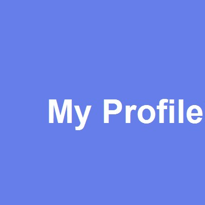

🎙️ 源的技术播客
分享编程技术 | 学习心得 | 项目经验
关于我

你好！我是一名计算机专业的学生，热爱编程和技术分享。
这个播客记录了我的学习历程和项目经验，希望能帮助到同样在路上的你。
最新一期：JSP+JDBC 开发实践 NEW
在这一期节目中，我分享了使用 JSP 和 JDBC 技术栈开发网上书店系统的完整过程。
内容包括：数据库设计、Servlet 架构、MVC 模式实践、以及遇到的问题和解决方案。

分享编程技术 | 学习心得 | 项目经验

你好！我是一名计算机专业的学生，热爱编程和技术分享。
这个播客记录了我的学习历程和项目经验，希望能帮助到同样在路上的你。
在这一期节目中，我分享了使用 JSP 和 JDBC 技术栈开发网上书店系统的完整过程。
内容包括：数据库设计、Servlet 架构、MVC 模式实践、以及遇到的问题和解决方案。